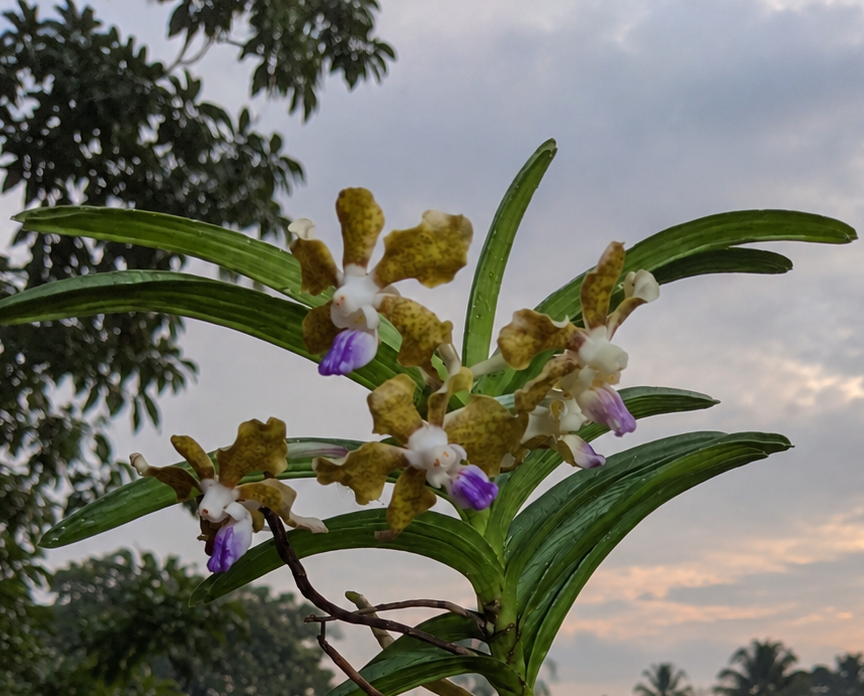

THE ARCHIVE AT A GLANCE

Specimens documented
9
Discoveries ahead
∞
Plant families represented
6
Archive established
2026
ORCHIDACAE · Specimen 01
Vanda Tessalata
Vanda tessellata (Checkered Vanda) is a medium-to-large,
warm-growing epiphytic orchid with a climbing stem and narrow, three-toothed leaves.
Its 15–50 cm inflorescences bear 5–12 fragrant,
long-lasting flowers, each 4–5 cm across.
The flowers feature pale green to yellowish-green petals and sepals marked with olive-brown checkered patterns,
contrasting with a violet-purple lip edged in white.
📍 Distribution
Indian Himalayas, Assam, Bangladesh, Sri Lanka, Myanmar,
and parts of China, typically reported around elevations of 1,500 m.
🌿 Growth Habit
Epiphytic, grows with exposed aerial roots
📖 Field Notes
A living specimen under observation in the Vanda Project —
documenting natural growth and flowering under terrace conditions.

— 800m
ORCHIDACAE · Specimen 02
Spathoglottis plicata
Spathoglottis plicata (also known as Phillipine ground orchid) is an evergreen terrestrial orchid
that forms tall, dense clumps with crowded pseudobulbs and long, pleated leaves.
Its tall, hairy flowering stems can bear up to 40 deep pink to purple flowers,
each featuring a distinctive three-lobed, T-shaped lip. It is distributed across the Eastern Himalayas, Western Ghats and Southeast Asia.
📍 Distribution
Eastern Himalayas, Western Ghats and Southeast Asia,
growing at elevations of 700–2,000 metres
🌿 Growth Habit
Terrestrial, clump-forming orchid with crowded pseudobulbs.
📖 Field Notes
A living specimen under observation —
documenting natural growth and flowering under terrace conditions.

— 1200m
MAGNOLIACEAE · Specimen 03
Magnolia Grandiflora
Magnolia grandiflora is a large evergreen flowering tree belonging to the family Magnoliaceae.
It is renowned for its enormous, fragrant, creamy-white flowers, which feature numerous broad petals and a prominent central reproductive structure.
Its thick, leathery, glossy green leaves have distinctive rusty-brown undersides. The tree produces cone-like fruits containing bright red seeds.
📍 Distribution
Native to the southeastern United States,In India it's cultivated in Manipur Gardens
🌿 Growth Habit
Evergreen to semi-evergreen woody tree with an upright growth habit
and spreading branches.
📖 Field Notes
A living specimen under observation under the Magnolia Project —
documenting natural growth under terrace conditions. Flowering will be updated soon.

— 1500m
MAGNOLIACEAE · Specimen 04
Magnolia Lillifera
Magnolia liliifera is a tropical himalayan flowering tree
belonging to the family Magnoliaceae.
It is admired for its elegant, fragrant, egg shaped creamy-yellow flowers,
which are elongated and often appear upright or slightly drooping. Its simple, alternate leaves are glossy green,
with a smooth texture. The flowers develop into distinctive cone-like fruiting structures containing bright seeds.
📍 Distribution
Native to Northeast India, Eastern Himalayan Region including Assam, Manipur and Sikkim, and
widely distributed across Southeast Asia,
It occurs in tropical and subtropical forests of 1800m.
🌿 Growth Habit
Evergreen, woody shrub or small to medium-sized tree with an upright-alternate arrangement of leaves.
📖 Field Notes
A living specimen under observation under the Magnolia Project —
documenting natural growth under terrace conditions. Flowering will be updated soon.

— 1800m
AMARYLLIDACEAE · Specimen 05
Zephyranthes grandiflora
A perennial bulbous herb belonging to the family Amaryllidaceae. Aloso known as
pink butterfly rain lily.It produces bright pink, funnel-shaped flowers with six spreading petals and slender,
grass-like green leaves. Its flowers often emerge shortly after rainfall,
giving the plant its common name.
📍 Distribution
Cultivated across India, including Assam and the Eastern Himalayan Region
One Recorded at approximately 600–2,500 m in Sikkim
🌿 Growth Habit
Perennial,
clump-forming herb growing from underground tunicate bulbs
📖 Field Notes
A living specimen under observation —
documenting natural growth and flowering under terrace conditions

— 2300m
POACEAE · Specimen 06
Phyllostachys Aurea
Phyllostachys aurea is an evergreen bamboo belonging to the grass family Poaceae.
It is recognised by its upright, golden-yellow culms, slender branches and narrow,
lance-shaped green leaves. The lower culm internodes often develop distinctive shortened
and swollen sections, giving the bamboo its characteristic appearance.
📍 Distribution
Native to southeastern China . It is cultivated in the Eastern and Western Himalayas,
including Uttarakhand, Shimla and Kasauli from lowlands to approximately
1,000–2,000 m
🌿 Growth Habit
Evergreen perennial bamboo with running rhizomes and upright, densely growing culms
📖 Field Notes
A living specimen under observation
documenting natural growth under terrace conditions

— 2200m
ROSACEAE · Specimen 07
Rosa chinensis var. minima
Miniature roses are compact, dwarf-growing members of the genus Rosa, admired for their delicate flowers
and small, glossy, serrated leaves. They produce abundant blooms
in shades of pink, red, white and yellow,
often resembling full-sized roses in miniature.
📍 Distribution
They are grown widely across India,
including Himalayan gardens and temperate hill stations such as
Darjeeling, Shimla and Kashmir
🌿 Growth Habit
Compact, bushy perennial shrub
with thorny stems and dense branching
📖 Field Notes
A living specimen under observation —
documenting natural growth and flowering under terrace conditions.
.jpeg)
— 2500m
JUNIPERUS · Specimen 08
Juniperus Chinensis
Juniperus chinensis 'Stricta' is an ornamental evergreen conifer belonging to the family Cupressaceae.
It is characterised by dense, upright branching and narrow, sharply pointed foliage
with a bluish-green appearance. Its foliage consists of juvenile needle-like leaves,
while mature growth may develop scale-like leaves. Female plants produce small,
bluish berry-like cones
📍 Distribution
Native to China and East Asia .
It is cultivated in himalayan gardens
🌿 Growth Habit
Slow-growing, evergreen, woody conifer with a dense, upright, columnar to conical form
📖 Field Notes
A living specimen under observation
documenting natural growth under terrace conditions

— 3200m
JUNIPERUS · Specimen 09
Juniperus Indica var complex
Juniperus indica Bertol. is an evergreen Himalayan conifer with densely branched, erect
or spreading growth. Its foliage consists of both needle-like juvenile leaves
and closely appressed, scale-like bluish-green mature leaves. It produces small, fleshy,
dark brown to bluish-black, berry-like seed cones
📍 Distribution
Native to the Himalayas, extending from northern Pakistan and India through Nepal and Bhutan
to Tibet and southwestern China.
It grows in subalpine and alpine habitats, generally at approximately
3,600–4,800 metres elevation
🌿 Growth Habit
Evergreen, slow-growing coniferous shrub or small tree,
sometimes forming prostrate alpine thickets.
📖 Field Notes
A living specimen under observation
documenting natural growth under terrace conditions